K562 Neither DNase matched - State 23:Low (n=44)
K562 Neither DNase matched - State 23:Low (n=44)
[
See group descriptions
]
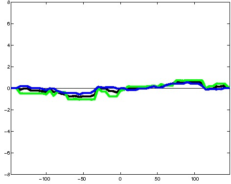
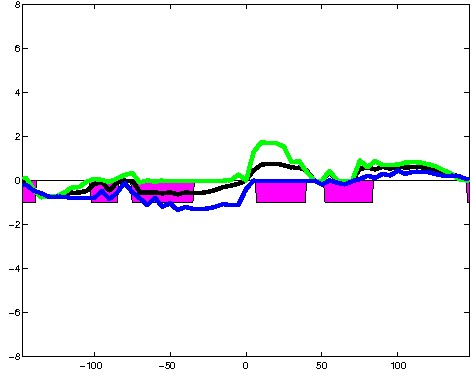
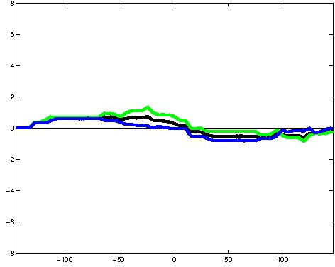
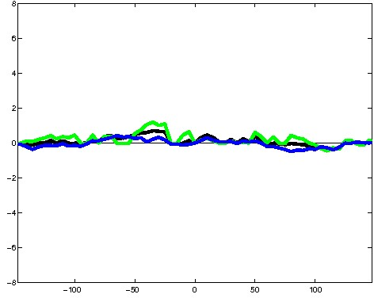
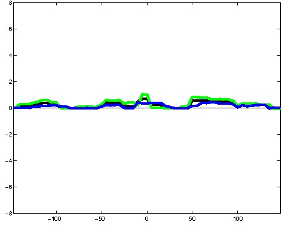
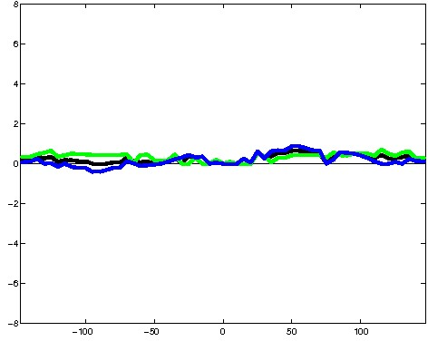
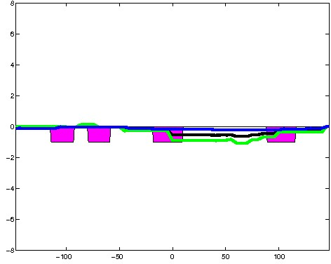
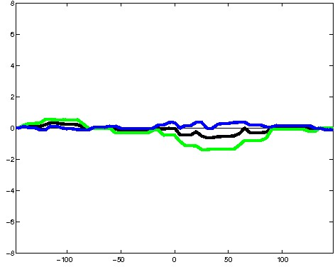
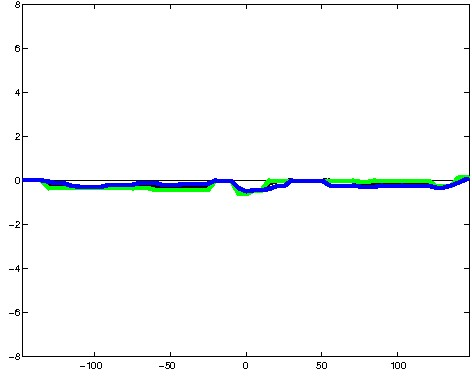
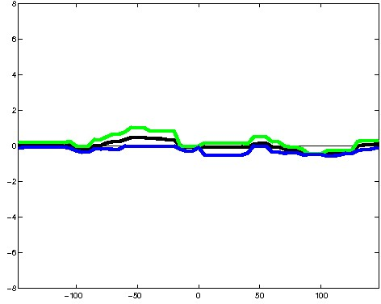
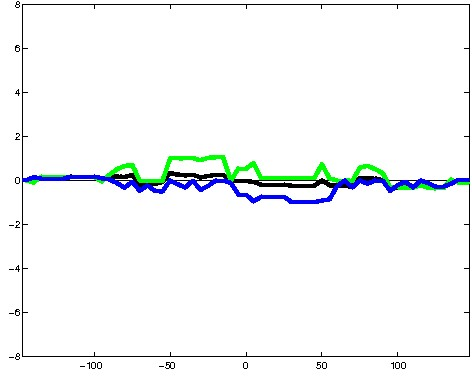
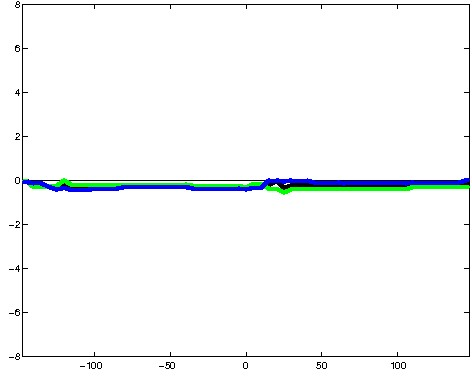
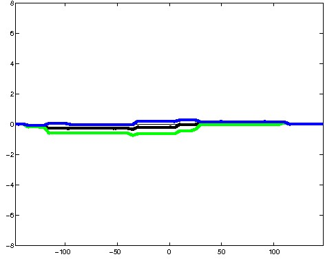
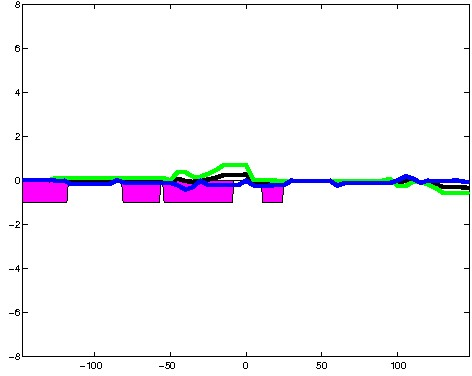
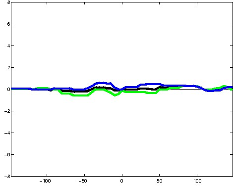
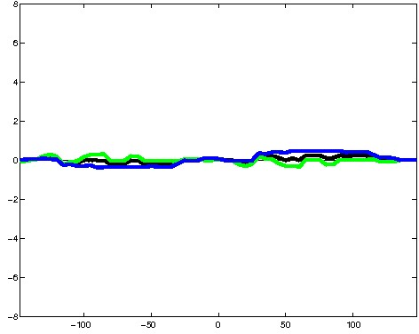
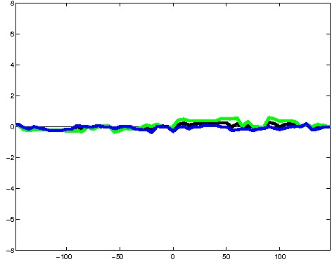
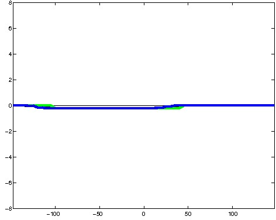
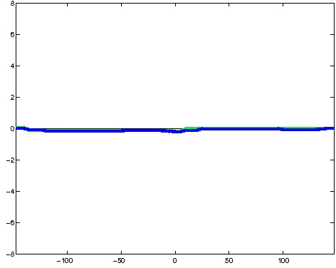
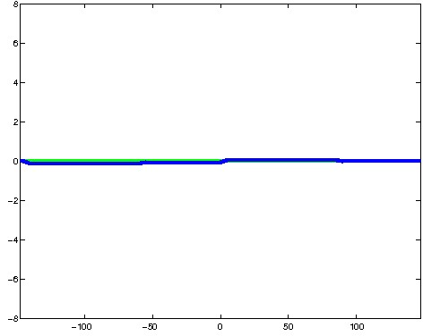
; picked in K562 (state 23:Low, DNase); matched; chr4:81,080,449-81,080,743 (295bp)")
; picked in K562 (state 23:Low, DNase); matched; chr11:73,140,229-73,140,523 (295bp)")
; picked in K562 (state 23:Low, DNase); matched; chr20:46,083,889-46,084,183 (295bp)")
; picked in K562 (state 23:Low, DNase); matched; chr5:115,705,909-115,706,203 (295bp)") 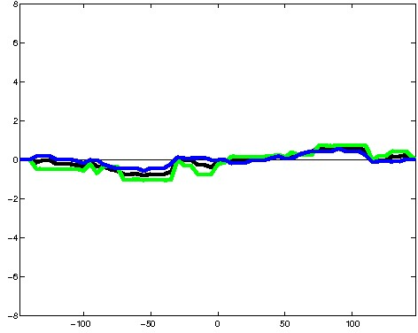
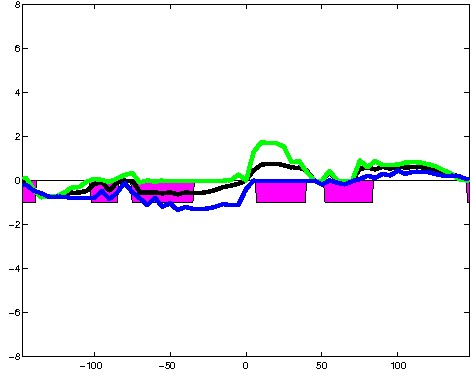
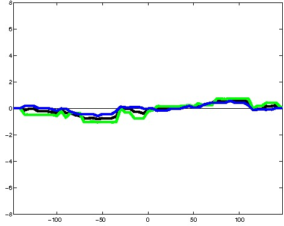
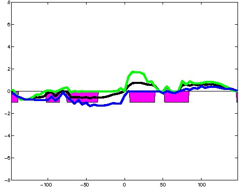
; picked in K562 (state 23:Low, DNase); matched; chr8:141,247,949-141,248,243 (295bp)") 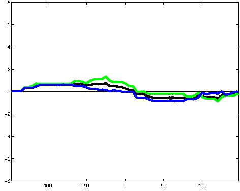
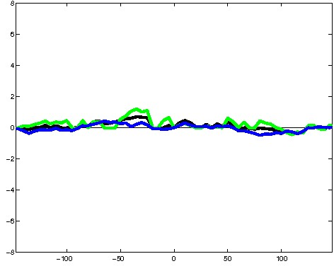
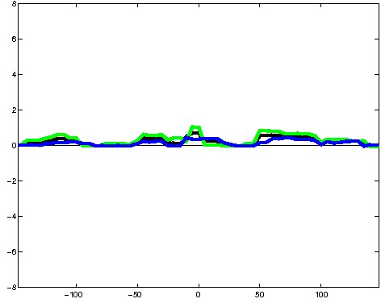
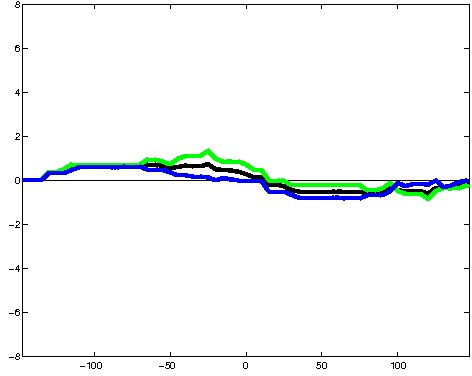
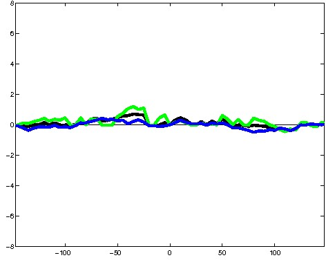
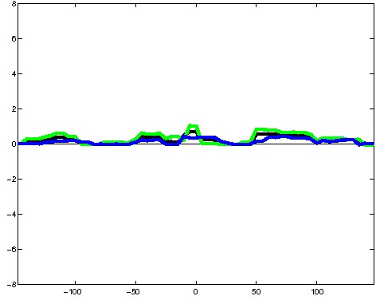
; picked in K562 (state 23:Low, DNase); matched; chr6:14,644,829-14,645,123 (295bp)") 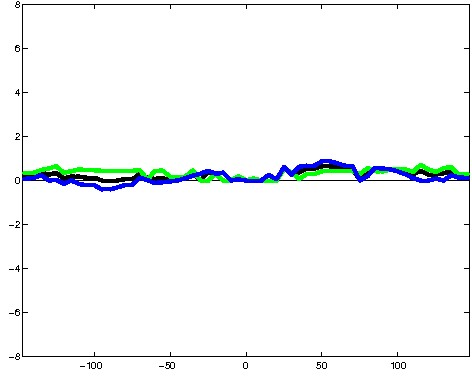
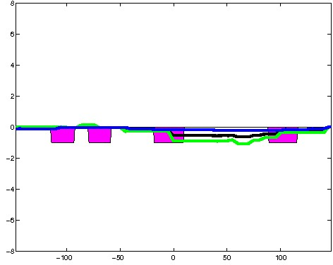
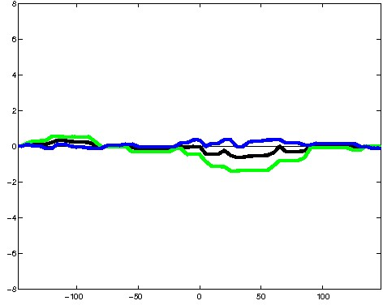
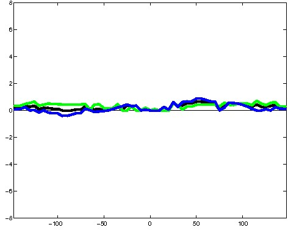
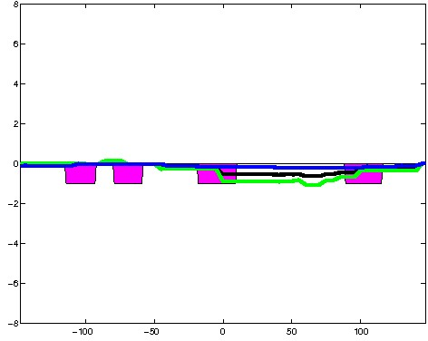
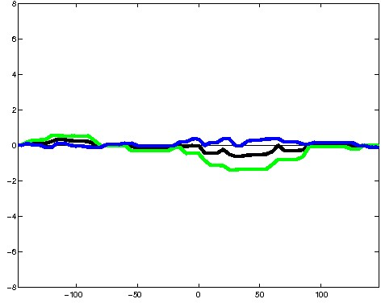
; picked in K562 (state 23:Low, DNase); matched; chr13:100,106,869-100,107,163 (295bp)")
; picked in K562 (state 23:Low, DNase); matched; chr16:56,882,009-56,882,303 (295bp)")
; picked in K562 (state 23:Low, DNase); matched; chr17:67,057,169-67,057,463 (295bp)") 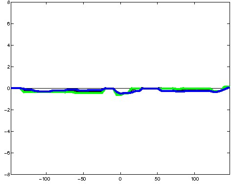
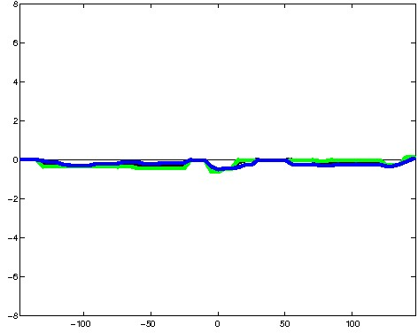
; picked in K562 (state 23:Low, DNase); matched; chr20:40,327,849-40,328,143 (295bp)")
; picked in K562 (state 23:Low, DNase); matched; chr2:172,218,569-172,218,863 (295bp)")
; picked in K562 (state 23:Low, DNase); matched; chr17:60,289,429-60,289,723 (295bp)")
; picked in K562 (state 23:Low, DNase); matched; chr15:58,739,969-58,740,263 (295bp)") 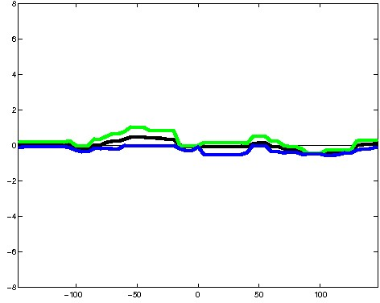
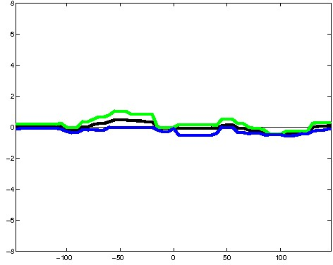
; picked in K562 (state 23:Low, DNase); matched; chr7:84,647,829-84,648,123 (295bp)")
; picked in K562 (state 23:Low, DNase); matched; chr17:64,533,609-64,533,903 (295bp)")
; picked in K562 (state 23:Low, DNase); matched; chr13:97,992,709-97,993,003 (295bp)") 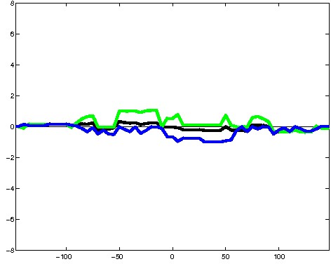
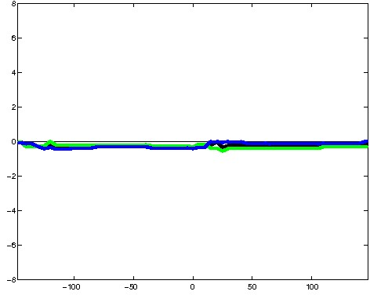
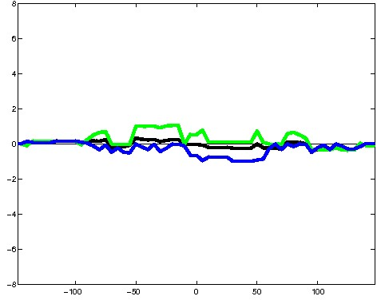
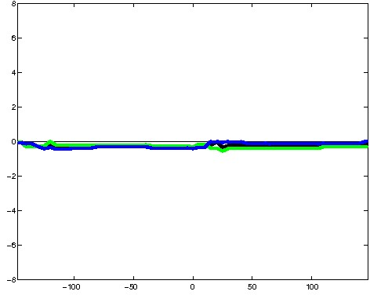
; picked in K562 (state 23:Low, DNase); matched; chr9:27,481,189-27,481,483 (295bp)") 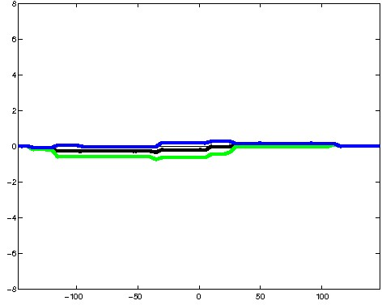
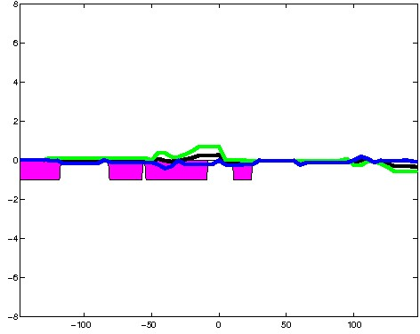
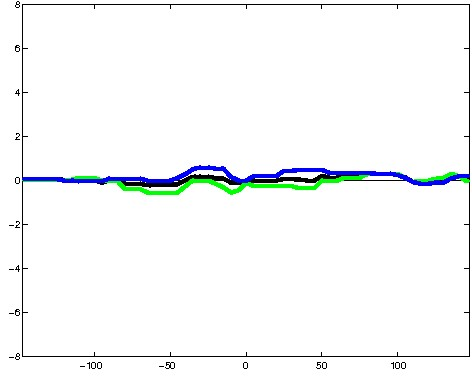
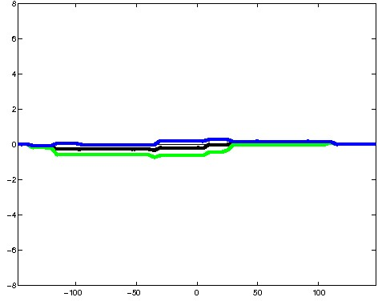
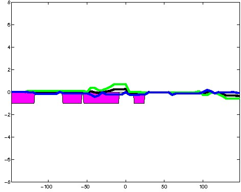
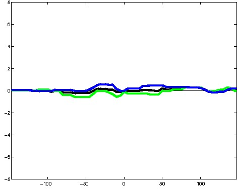
; picked in K562 (state 23:Low, DNase); matched; chrX:13,133,529-13,133,823 (295bp)") 


; picked in K562 (state 23:Low, DNase); matched; chr11:9,900,249-9,900,543 (295bp)")
; picked in K562 (state 23:Low, DNase); matched; chr17:48,416,449-48,416,743 (295bp)")
; picked in K562 (state 23:Low, DNase); matched; chr5:149,090,229-149,090,523 (295bp)")
; picked in K562 (state 23:Low, DNase); matched; chr12:23,513,229-23,513,523 (295bp)")
; picked in K562 (state 23:Low, DNase); matched; chr10:103,463,169-103,463,463 (295bp)") 


; picked in K562 (state 23:Low, DNase); matched; chr8:80,842,589-80,842,883 (295bp)") 
